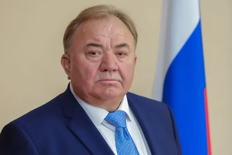

глава Республики Ингушетии
Махмуд-Али Макшарипович Калиматов
родился 9 апреля в республике Казахстан.
С апреля 1977 по 1979 годы проходил военную службу.
Получил высшее образоване, в 1989 году окончил юридический факультет.
1984 по 1900 годы работал в районных комитетах ВЛКСМ и КПСС.
С 1990 года -на службе в органах прокуратуры
Что такое Ингушетия
Ингушетия официально Республика Ингушетия, находится в республику из России,
расположенных в Северо-Кавказского из Восточной Европы Республика является
частью Северо-Кавказского федерального округа и имеет общие сухопутные границы со
страной Грузия на юге; и граничит с российскими республиками Северная Осетия,
Алания и Чечня на западе и востоке, соответственно; при этом на севере имеет границу
со Ставропольским краем.
Её столицей является город Магас а крупнейшим городом является Назрань
Республика площадью 3600 кв. км является самым маленьким из негородских субъектов Российской Федерации.
Была образована 4 июня 1992 года, после того, как Чечено- ингушская Автономная Советская республика была разделена на две части.
В республике проживают коренные ингуши, народ нахского происхождения.
По данным переписи 2021 года, ее население оценивалось в 509 541 человек.